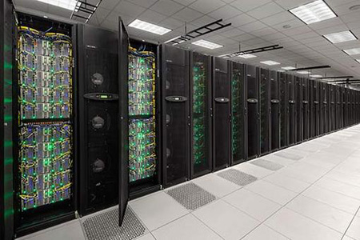
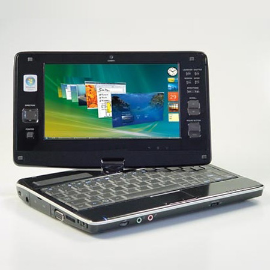
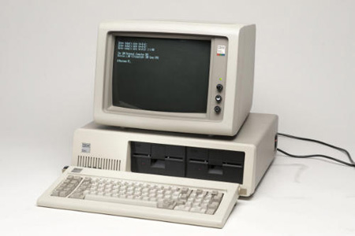

تاریخچه رایانه
تاریخچه پیدایش کامپیوتر
انواع کامپیوتر (رایانه)
- ابر کامپیوترها
تاریخچه صنعتی ابرکامپیوت

تاریخچه اختراع کامپیوتر,تاریخچه کامپیوتر,کامپیوتر
- کامپیوتر های بزرگ و کوچک (چند کاربر و تک کاربر)
تاریخچه مینی کامپیوترها

واژه ی مینی کامپیوتر در دهه ۱۹۶۰ برای توصیف رایانه های کوچک نسل سوم که بر فن آوری ترانزیستور و حافظه ی هسته ای بنا شده بود گسترش یافت. در مقایسه با کامپیوتر های بزرگ که معمولاً تمام اتاق را پر می کنند آنها معمولاً چند قفسه بیشتر جا ی نمی گرفتند. اولین مینی کامپیوتر موفق PDP-8 دوازده بیتی شرکت Digital Equipment Coporation بود که هنگام شروع به کار در سال ۱۹۶۴م از ۱۶۰۰۰ دلار امریکا به بالا قیمت داشت.
تاریخچه مینی کامپیوترها,تاریخچه کامپیوتر,کامپیوتر
واژه ی مینی کامپیوتر در دهه ۱۹۶۰ برای توصیف رایانه های کوچک نسل سوم به کار رفت
با ظهور ریز کامپیوتر ها در دهه ۱۹۷۰، مینی کامپیوترها فضای میان ریز کامپیوتر های کم توان و کامپیوتر های بزرگ پر ظرفیت را پر کرد. در آن زمان ریز کامپیوتر ها ماشین های تک کاربره ی نسبتاً ساده ای بودند که از سیستم عامل های ساده ی program launcher مانند CP/M یا DOS استفاده می کردند، در حالی که مینی کامپیوترها سیستم های قوی تری بودند که از سیستم عامل های چند وظیفه ای و چند کاربره مانند VMS و یونیکس استفاده می کردند. مینی کامپیوترهای کلاسیک رایانه هایی ۱۶ بیتی بوند، در حالی که به مینی های ۳۲بیتی با کاربری بالا تر اغلب ابر مینی می گفتند.
عرضه نخستین کامپیوتر شخصی

تاریخچه کامپیوتر,تاریخچه ساخت کامپیوتر,کامپیوتر
عرضه نخستین ریزپردازنده برای فروش
کامپیوتر شخصی Altair 8800
عرضه کامپیوتر Apple1
تاریخچه کامپیوتر,تاریخچه رایانه,کامپیوتر
تاریخچه کامپیوتر در ایران
تاریخچه کامپیوتر در ایران را می توان به چهار دوره تقسیم کرد :
فرم نظر سنجی
فرم ثبت سفارش و ارسال سفارش
محصولات بیشتر و قیمت محصولات
تکنولوژی و اخبار آن